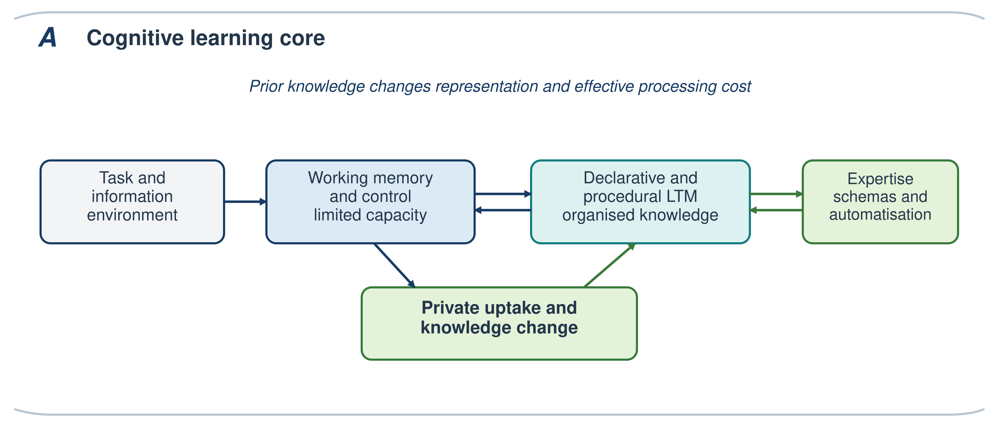
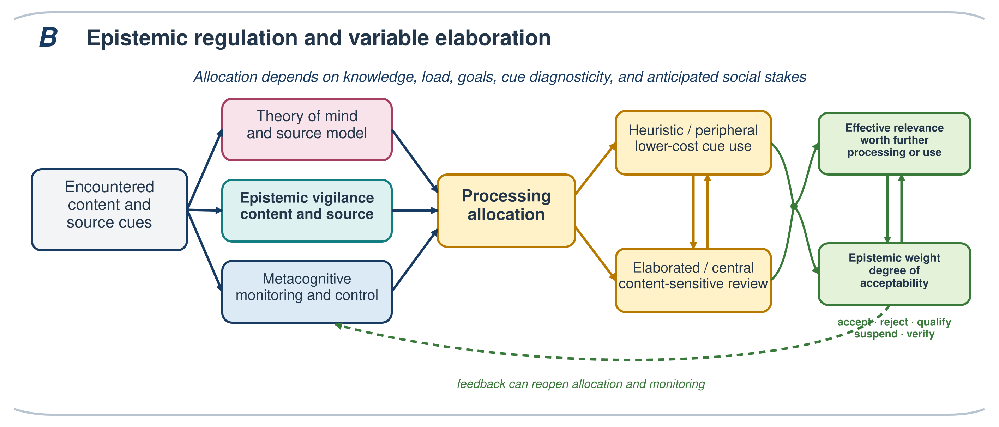

CAVL: A Cognitive Architecture for Vigilant Learning
MOVICI Working Paper 01
Resources Download PDF Theoretical paper — no empirical dataset
Video Presentation
Abstract
Learning from testimony, instruction, documents, and digital systems requires more than comprehension and memory. Learners must decide which claims warrant acceptance, which sources merit trust, and how limited cognitive resources should be allocated. Yet learning theories often give limited attention to social provenance, whereas social accounts of authority rarely specify the memory and control mechanisms through which social conditions alter learning. This article introduces CAVL, the Cognitive Architecture for Vigilant Learning, as a functional, multilevel architecture of socially embedded vigilant learning. CAVL links working memory, declarative and procedural long-term memory, schema construction, and automatisation with epistemic vigilance, theory of mind, metacognitive regulation, and two forms of social embedding. Structural embedding concerns how trajectories, institutions, and social positions shape knowledge, dispositions, cues, and verification costs. Interactional embedding concerns the evaluation of contents and sources when direct verification is limited. CAVL makes three signature claims. Learners arbitrate between content quality and attributed epistemic authority as a function of valid prior knowledge, processing constraints, and cue diagnosticity. Private epistemic uptake can diverge from public expression when communicating a judgement carries social or reputational costs. Structurally distributed resources and interactionally allocated authority recursively shape exposure, participation, and later learning. Six falsifiable propositions specify when these claims would be supported or require revision. CAVL is not a theory of all learning. It is a middle-level architecture for explaining how socially available information is evaluated, weighted, integrated, and expressed.
Keywords: socially embedded learning; epistemic vigilance; expertise; cognitive architecture; epistemic authority; metacognition
2 What kind of architecture is CAVL
2.1 A functional multilevel and precomputational architecture
Cognitive architectures identify relatively stable functions and relations that constrain performance across tasks (Newell, 1990; Kotseruba & Tsotsos, 2020). The strongest architecture also specifies representations, algorithms, and executable models. CAVL does not yet meet that computational standard. It is a functional, integrative, multilevel, and precomputational architecture. It identifies components, information flows, feedback relations, moderators, and boundary conditions that a later formal model must implement. Calling it an architecture is warranted only insofar as these commitments rule out explanations and generate tests.
Terminological discipline is therefore important. A system refers to a functionally distinguishable organization such as declarative memory, procedural memory, theory of mind, metacognitive monitoring, or valuation and control. A mechanism refers to an operation such as retrieval, source attribution, coherence checking, trust attribution, encoding, or updating. A processing regime describes the degree and form of elaboration through which those systems operate. Epistemic weight is the graded confidence or acceptability assigned to a representation. Attributed epistemic authority is a social representation of who deserves credit or deference; it is not identical to actual competence. Embedding refers to the interactional and structural conditions that shape processing. Module denotes relative functional specialization within distributed and plastic neural networks, not an encapsulated organ or a unique brain region.
CAVL is compatible with explicit symbolic representations and learned subsymbolic quantities, but it should not be described as a complete hybrid architecture. Newell and Simon established a symbolic architectural tradition. Anderson’s ACT-R programme provides a stronger precedent for relating symbolic productions and declarative chunks to subsymbolic activation, utility, and neural constraints (Anderson & Lebiere, 2003). CAVL inherits the ambition to articulate levels while remaining agnostic about the precise computational format of several components.
2.2 Integration by explanatory transition
CAVL is a problem-driven synthesis rather than a systematic review. A construct enters the architecture when it explains a necessary transition in vigilant learning, constrains that transition, or prevents the conflation of distinguishable outcomes. Integration follows three rules. First, constructs remain separate when their causes or consequences can dissociate. Exposure, memory, private uptake, and public expression are therefore not interchangeable. Second, cross-level relations must specify a pathway. Social position cannot be treated as a momentary cognitive operation; its proximal effects must be mediated by resources, cues, goals, or opportunities unless a direct pathway is demonstrated. Third, biological evidence constrains but does not replace functional explanation.
These rules answer Newell’s challenge without claiming a universal theory. CAVL is a middle-level architecture. It seeks enough integration to explain recurrent relations across socially situated learning tasks, while leaving detailed models of reading, argumentation, metacognition, persuasion, cultural transmission, and institutional power in place. Its value lies in specifying their interfaces and producing propositions that can drive cumulative theory development (Greene, 2022).
2.3 Relation to adjacent theories
Table 1
Adjacent theories and the explanatory niche of CAVL
| Tradition or model | Primary explanatory object | Contribution retained by CAVL | Relation that CAVL adds |
|---|---|---|---|
| ACT-R and unified cognitive architectures | Stable cognitive components and learning mechanisms | Declarative and procedural knowledge, retrieval, productions, control | Socially attributed sources and epistemic weighting within learning |
| Cognitive Load Theory and expertise research | Learning under limited processing capacity | Working-memory limits, schema construction, automatisation, expertise reversal | How knowledge and load alter content evaluation, source dependence, and uptake |
| Epistemic vigilance and testimony | Protection from unreliable communication | Content and source evaluation, competence, benevolence, argumentation | Coupling to memory, metacognition, processing regimes, and knowledge updating |
| ELM, heuristic-systematic, and dual-process accounts | Variation in elaboration and persuasion | Differential reliance on arguments and peripheral or heuristic cues | Recurrent route selection constrained by expertise, load, relevance, and social cost |
| Sourcing and multiple-document comprehension | Source-content representation across documents | Provenance, corroboration, source memory, document models | Generalisation across social learning situations and explicit distinction between weighting and uptake |
| AIR, Apt-AIR, and SEGL | Epistemic aims, ideals, performance, and growth | Normative criteria, epistemic resources, intervention targets | Within-episode mechanisms through which resources change allocation, evaluation, and memory |
| Cognitive sociology and social epistemology | Social production of classifications, credibility, and authority | Institutions, trajectories, habitus, status, injustice | Pathways from structural conditions to proximal processing and back to authority distributions |
| Sociocultural, situated, and participation-based theories | Learning through culturally organised activity, mediation, and participation | Historically constituted practices, tools, institutions, and communities | Within-episode allocation, source and content evaluation, epistemic weighting, and differentiated uptake |
CAVL is also complementary to sociocultural, situated, and participation-based theories of learning. These traditions explain how participation, mediation, cultural practices, and historically constituted tools and institutions organize learning (Lave & Wenger, 1991; Rogoff, 1990; Vygotsky, 1978). CAVL operates at a different explanatory grain. It specifies how attention is allocated, how contents and sources are evaluated, how epistemic weight is assigned, and how different forms of uptake emerge within an episode. It relies on sociocultural theories to explain how the resources entering that episode was historically produced. Recent work on multiple-source use similarly shows why source evaluation must be situated within sociocultural relations and epistemic justice (Knight et al., 2026).
CAVL is especially complementary to models of epistemic cognition and growth. AIR and Apt-AIR clarify epistemic aims, ideals, reliable processes, and apt performance (Chinn et al., 2011; Barzilai & Chinn, 2018). The Stimulating Epistemic Growth in Learners model organizes epistemic virtues, beliefs, values, emotions, aims, and metacognitive resources within state–trait dynamics and identifies educational leverage points (Orona & Greene, 2026). CAVL asks a different question: how do such resources alter attention, evaluation, confidence, effort, and knowledge updating during a socially situated learning episode? SEGL can explain the development of a disposition to seek justification; CAVL specifies when that disposition can recruit diagnostic knowledge, whether verification is affordable, and how the result receives epistemic weight. Neither model supersedes the other.
Figure 1 develops CAVL progressively at the points where each layer has been introduced. Figure 1A presents the cognitive learning core. Figure 1B shows how theory of mind and source representation, epistemic vigilance, and metacognition jointly contribute to processing allocation across two variable regimes. Figure 1C presents the complete recurrent architecture within its interactional and structural embedding. The progression is pedagogical, not temporal: the completed architecture has no obligatory first module or fixed linear route.
3 The cognitive learning core
3.1 Declarative and procedural long-term memory
Vigilant learning depends first on what the learner already knows. Declarative memory supplies semantic knowledge about domains, concepts, causal relations, social roles, institutions, and typical intentions, together with episodic records of encounters, sources, and outcomes (Squire, 2004; Binder & Desai, 2011). Procedural memory supports production, habits, scripts, search routines, and increasingly automatized ways of evaluating information. These systems are analytically distinct but cooperate in skilled activity.
Prior knowledge determines which representation a learner can construct from the same message. It enables comprehension, activates expectations, supports comparison with evidence, and makes contradictions detectable. Expertise is more than an accumulation of facts: it is an organization of schemas and procedures that changes perception, retrieval, and problem solving (Chi et al., 1988; Ericsson & Kintsch, 1995). Because organized knowledge allows multiple elements to function as a meaningful unit, expertise changes effective processing cost rather than simply enlarging a fixed working-memory capacity.
This priority of knowledge creates a cumulative dynamic. Those who already possess relevant schemas can learn more efficiently and can evaluate content more directly. Yet expertise is itself socially produced through instruction, practice, access to resources, and recognition. CAVL therefore treats domain knowledge as a central proximal resource in many tasks and as an outcome of structural trajectories. This dual status is the first bridge between cognitive learning theory and social embedding.
Prior knowledge is not a truth criterion. Incorrect or identity-protective schemas can make weak claims coherent and strong counterevidence costly to integrate. Expertise can also produce entrenchment, premature closure, and overconfidence when a familiar solution blocks a better one (Bilalić et al., 2008). CAVL consequently predicts advantages from valid and accessible domain knowledge, not from subjective familiarity or social labels of expertise.
3.2 Working memory as a constrained coordination space
Working memory maintains and manipulates currently relevant representations under severe capacity limits (Baddeley, 2000; Cowan, 2001). During vigilant learning, it can coordinate the message, task goal, retrieved domain knowledge, source information, alternative interpretations, and reasons for acceptance or rejection. Executive control maintains goals, inhibits an initially attractive response, updates active representations, and changes strategy (Miller & Cohen, 2001; Miyake et al., 2000; Miyake & Friedman, 2012). These functions depend on distributed frontoparietal and content-specific networks rather than a single anatomical store (D’Esposito & Postle, 2015; Petersen & Posner, 2012).
The central constraint is competition. Comprehending a difficult claim, reconstructing an argument, recalling source history, inferring an interlocutor’s intention, and anticipating the social consequences of disagreement can draw on overlapping resources. A learner may therefore understand content without comparing sources, remember a source without evaluating its argument, or form a plausible judgement without retaining the evidence that supported it. These are architectural consequences, not necessarily deficits of motivation or character.
Cognitive Load Theory explains why instruction must manage this competition. If essential elements cannot be coordinated, elaborated evaluation will fail even when the learner values accuracy. Conversely, well-organized knowledge and automatized procedures can make sophisticated evaluation fast and inexpensive. The relation between effort and epistemic quality is therefore conditional. More elaboration improves evaluation only when diagnostic knowledge and usable evidence are available; more effort in their absence can produce confusion, rationalization, or perseveration.
3.3 Learning as schema construction proceduralizing and feedback
Learning modifies the architecture that produced it. Accepted or conditionally retained information can update semantic schemas, create episodic traces, strengthen source-content links, or establish procedures for future tasks. Practice can transform deliberative steps into productions and heuristics. Feedback can revise both content knowledge and the estimated reliability of a source. A knowledge state at time t + 1 therefore changes what will be attended to, understood, and trusted at time t + 2.
This recurrent structure is central to CAVL. Vigilance is not only a gate before memory. It can operate before focal attention through learned cue sensitivity, during comprehension through coherence monitoring, during controlled evaluation, after encoding through source monitoring, and later through retrieval, correction, or belief revision. The order of these operations depends on task, context, expertise, cognitive availability, goals, and mental state. This flexibility is constrained by predictions developed below; it is not a license to explain any sequence after the fact.
3.4 Developmental asymmetry
Children display early sensitivity to informant accuracy, competence, and deceptive intention (Clément et al., 2004; Mascaro & Sperber, 2009; Harris et al., 2018). Such capacities make vigilant social learning possible. They do not supply criteria for evaluating a statistical inference, a medical study, or an algorithmic recommendation. Culturally secondary knowledge requires extended instruction and practice, whereas some social sensitivities develop through ordinary interaction (Geary, 2008; Tricot & Sweller, 2014).
Education must therefore do more than invite a generic critical stance. It must build domain knowledge, source concepts, procedures, and institutional understanding that make vigilance diagnostic. Even early sensitivity to informant accuracy and deception becomes educationally powerful only when coordinated with culturally acquired criteria (Clément, 2010; Clément et al., 2004; Harris et al., 2018). A prompt to “check the source” can increase extraneous demand when a novice does not know what constitutes relevant competence or independent evidence.

Figure 1A. Cognitive learning core. Working memory coordinates currently active representations with declarative and procedural long-term memory. Private uptake produces knowledge change; knowledge organization and automatization create expertise that alters later representation and effective processing cost.
4 Epistemic regulations within the learning architecture
4.2 Epistemic vigilance as coordinated content and source evaluation
Epistemic vigilance is a family of mechanisms that protects the benefits of communication without making general distrust adaptive (Sperber et al., 2010). Content evaluation compares a claim with prior knowledge, evidence, coherence, alternative explanations, and argument quality. Source evaluation represents relevant competence, access to evidence, benevolence, honesty, independence, reputation, and track record. Arguments connect the two: a source can supply reasons that the learner can partly evaluate even when the conclusion exceeds current expertise.
The routes are reciprocal. Plausible, well-supported information can improve an unfamiliar source’s reputation. A reliable source can justify provisional acceptance when direct content evaluation is impossible. Conflict can trigger search, qualification, reduced confidence, or suspension. It can also be resolved too quickly in favor of an identity-congruent source or a familiar claim. The outcome depends on the learner’s knowledge, processing resources, aims, and cue environment.
CAVL departs from the idea of epistemic vigilance as a single filter positioned between perception and memory. Vigilance is a coordination function across memory, mentalizing, monitoring, valuation, and control. It can alter selection before comprehension, contribute to interpretation during comprehension, govern acceptance after an argument has been represented, and revise a source or belief after later feedback. No dedicated neural region is claimed. This is also why the attentional construct called vigilance in cognitive neuroscience should not be conflated with epistemic vigilance: sustained attention may support the process but does not perform its epistemic evaluation.
4.3 Metacognitive monitoring and control
Metacognition monitors and regulates the learner’s own cognition (Flavell, 1979; Nelson & Narens, 1990; Dunlosky & Metcalfe, 2009). Judgements of understanding, confidence, familiarity, difficulty, and knowing guide decisions to study longer, seek help, verify, change strategy, or stop. These judgements are inferred from cues rather than read directly from knowledge (Koriat, 1997). Fluency can be mistaken for understanding, while effortful but productive learning can feel uncertain. Metacognitive accuracy and confidence recruit distributed prefrontal and monitoring systems whose contribution varies across domains (Fleming & Dolan, 2012).
The target distinguishes metacognition from theory of mind and epistemic vigilance. Metacognition evaluates the learner’s current cognitive state. Theory of mind represents agents and perspectives. Epistemic vigilance evaluates communicated content and sources. They interact, however. Recognizing one’s ignorance can increase dependence on a source; distrusting a source can increase monitoring; noticing a conflict can recruit control. A learner can be well calibrated about not knowing yet poor at identifying who does know or can recognize expertise in another while remaining overconfident about personal understanding.
The educationally important outcome is not uniformly high confidence or permanent reflection, but calibration and adaptive control. Learners need procedures for recognizing when existing knowledge is sufficient, when authority must be used, and when the stakes justify additional cost.
4.4 Two processing regimes rather than two fixed routes
Persuasion and dual-process research provide a crucial constraint. The Elaboration Likelihood Model distinguishes attitude change based predominantly on effortful examination of issue-relevant arguments from change based more heavily on peripheral cues when motivation or ability to elaborate is lower (Petty & Cacioppo, 1986). The heuristic-systematic model and broader dual-process accounts make related distinctions (Chaiken, 1980; Evans, 2008). CAVL imports this insight without treating central, systematic, controlled, and reflective processing as exact synonyms, or peripheral, heuristic, automatic, and intuitive processing as a second natural kind.
No functional component maps exclusively onto either processing regime. Source evaluation can be highly elaborated, whereas content evaluation can become rapid and automatized through expertise.
CAVL instead defines two overlapping regimes on an elaboration continuum. A heuristic or peripheral regime is relatively low-cost and relies more strongly on familiarity, fluency, reputation, credentials, status, consensus, identity, affect, or other rapidly available cues. It can be highly effective when learned cues track competence and when direct verification is impossible. It can also integrate poor-quality information when authority, repetition, or social reward diverges from evidence.
An elaborated or central regime allocates more resources to the content, evidence, coherence, and inferential structure of a message. It can yield more stable and discriminating judgements when the learner is motivated, capacity, relevant knowledge, and diagnostic evidence. It offers no guarantee of truth. Elaborated reasoning can rationalize prior commitments, selectively recruit evidence, or become inefficient when the problem representation is poor (Kunda, 1990; Ditto & Lopez, 1992).
The regimes can alternate within one episode. A source cue may determine initial attention; a detected inconsistency may trigger elaboration; an automatized expert routine may then resolve the problem quickly; later social feedback may reopen the judgement. Expertise can reduce the cost of elaborated content evaluation, whereas load, time pressure, fatigue, and insufficient knowledge can increase reliance on cheaper cues. Processing and verification costs primarily shape effort allocation, elaboration, and checking. Social and reputational costs primarily shape whether a learner confronts, concedes, withdraws, or expresses a judgement publicly. Anticipated social costs can also operate upstream by redirecting attention or discouraging examination. They should not, however, be automatically absorbed into private epistemic weight: a learner may judge a claim well supported yet remain silent or publicly conform without integrating it.

Figure 1B. Epistemic regulation and variable elaboration. Theory of mind and source representation, epistemic vigilance, and metacognition jointly contribute to processing allocation. Both heuristic/peripheral and elaborated/central regimes can evaluate contents and sources and can alternate within an episode. Effective relevance and epistemic weight remain distinct but interacting constraints on differentiated outcomes; dashed feedback indicates recurrent monitoring and revision.
5 Effective relevance epistemic weight and uptake
5.1 Relevance is effects relative to effort
Relevance Theory proposes that information is more relevant when it yields greater positive cognitive effects and when obtaining those effects requires less processing effort (Sperber & Wilson, 1995; Wilson & Sperber, 2004). This relation is comparative, not a validated numerical equality. Positive effects include warranted conclusions, revision of assumptions, strengthened beliefs, and useful implications. The same information can consequently have different relevance for learners with different knowledge, goals, and contexts. Relevance is socially rewarded, but not simply at the price of accuracy, which supports treating usefulness and epistemic quality as related but distinguishable (Altay & Mercier, 2020).
Comprehension and acceptance remain distinguishable. A message can be understood without being believed, and a rejected claim can still be useful for identifying manipulation, constructing a refutation, or updating a source model. Yet relevance assessment and epistemic assessment are interdependent aspects of communication (Sperber et al., 2010). If a claim is highly consequential but uncertain, it may be relevant enough to justify checking. If a source is unreliable, the claim may receive little weight for belief integration but substantial relevance as evidence about the source.
5.2 Conceptual constraints on relevance epistemic weight and uptake
Rather than proposing a numerical equation, CAVL imposes four conceptual constraints on any later formalization.
First, processing allocation depends on prior knowledge, goals, available capacity, processing and verification costs, and anticipated social stakes. Social stakes can change whether a claim is examined without thereby determining its epistemic weight.
Second, epistemic weight depends on represented content, source information, arguments, corroboration, and valid prior knowledge. Attributed authority is one input among others, not a substitute for epistemic weight. Effective relevance governs whether further processing or use is worthwhile, whereas epistemic weight governs the degree of acceptability assigned to a representation; they interact without being identical.
Third, cognitive relevance and epistemic weight jointly constrain private uptake but do not determine a single outcome. A claim can be accepted, rejected, qualified, suspended, stored conditionally, used for refutation, or used to update a source model.
Fourth, public expression is a distinct decision shaped by private uptake, social and reputational costs, identity, power, and audience. Observed endorsement therefore cannot serve as a transparent measure of private belief or durable learning.
These constraints preserve the insight that relevance is relative to effects and effort while distinguishing relevance, epistemic weight, private uptake, and public expression. They remain precomputation: later formalization must specify measurable variables and combination rules.
5.3 From weighting to multiple forms of uptake
Epistemic weight is graded. It can lead to acceptance, rejection, qualification, suspension, or conditional storage. Private uptake also has several targets. Information may change a factual belief, alter a procedure, update a source’s reputation, guide immediate action, or remain available as a counterexample. Public expression, including explicit endorsement, is a further outcome and should not be equated with private judgement. A learner may recognize strong evidence yet avoid expressing agreement because the social cost is high. Conversely, public conformity can occur without durable private uptake.
This multiplicity is essential for measurement. Exposure is not retention; retention is not evaluation; evaluation is not integration; private integration is not public expression; and immediate change is not durable learning. Behavioral traces such as clicks, dwell time, or speaking turns locate activity in the information environment, but no trace has a universal cognitive meaning. Its interpretation depends on the person, task, and alternatives available.
7 The integrated recurrent architecture
7.1 A recurrent process without a fixed order
At a given moment, a learner with current knowledge, procedures, source models, goals, and cognitive state acts in an information environment. Activity selects a non-neutral sample of claims, sources, arguments, and social cues. The learner constructs a representation using working memory and retrieved long-term knowledge. Content evaluation, source evaluation, theory of mind, relevance estimation, and metacognitive monitoring contribute to epistemic weight. The learner can accept, reject, qualify, suspend, seek further evidence, store information conditionally, update a source model, or regulate public expression. Any resulting change modifies subsequent knowledge and may alter later search, cue use, confidence, automatization, or authority attribution.
This description is not a mandatory chronology. Epistemic vigilance may operate before focal attention through learned selection cues, during comprehension through plausibility expectations, during controlled comparison, or after encoding when a source is re-evaluated. Source information may precede content, follow it, or be reconstructed at retrieval. A peripheral cue can initiate elaboration; central evaluation can become automatized; later feedback can reopen an apparently settled judgement. The order depends on expertise, load, motivation, goals, social stake, and mental state.
Flexibility does not make the architecture unfalsifiable. CAVL predicts systematic conditionality. Low valid knowledge should increase reliance on socially available source cues. High load should amplify that tendency when cue-based routines are cheaper, but automatized expertise may attenuate load costs. Motivation to be accurate should increase elaboration only when ability and evidence permit it. High social cost should increase dissociation between private evaluation and public expression. These moderator-linked predictions distinguish recurrent processing from an unconstrained claim that any module can do anything.
7.2 Functional differentiation and biological constraints
CAVL requires partially dissociable functions, not anatomically isolated modules. Memory, cognitive control, mentalising, metacognition, and valuation are implemented by distributed, plastic, and interacting neural systems; no one-function–one-region mapping is assumed. Epistemic vigilance has no established dedicated brain network. It is a functional coordination hypothesis concerning how contents, sources, arguments, uncertainty, and acceptability are evaluated across these systems.
Neurobiological evidence can constrain CAVL by testing whether proposed functions dissociate and coordinate under appropriate task contrasts. It cannot replace functional explanation, and activation in an overlapping network does not identify a uniquely epistemic process. Behavioural and time-resolved measures are therefore necessary alongside neural evidence.
7.3 Three indispensable dissociations
The completed architecture depends on three families of dissociation. First, exposure, attention, comprehension, retention, evaluation, uptake, and durable learning are different transitions. Evidence for one does not establish the others. Second, objective knowledge, confidence, perceived expertise, epistemic credit, authority, and influence are different quantities whose alignment must be measured. Third, proximal processing and structural conditions occupy different levels even when they form causal loops. These distinctions are not terminological refinements. They determine what an experiment must manipulate and what an educational intervention can plausibly change.
8 Testable propositions and decisive evidence
Theoretical architecture earns its place by organizing risky predictions. CAVL therefore reduces its research programmed to six propositions. Each expresses a relation that should survive across more than one task, while allowing direction and magnitude to depend on specified conditions.
Table 2
Core CAVL propositions, discriminating tests, and revision criteria
| Proposition | Discriminating test | CAVL prediction | Evidence that would require major revision |
|---|---|---|---|
| P1 Knowledge-dependent evaluation | Present equivalent claims and evidence across independently measured or trained levels of valid domain knowledge | Greater valid knowledge improves content discrimination, lowers effective cost, and reduces non-diagnostic source dependence | Cue use, discrimination, and cost remain invariant across large validated knowledge differences |
| P2 Authority–quality conflict | Orthogonally manipulate objective argument or content quality and attributed source authority | Low-knowledge learners’ weight attributed authority more; knowledgeable learners weight quality more when capacity and evidence are available | Authority and quality have indistinguishable effects across knowledge levels, or one factor universally eliminates the other |
| P3 Regime allocation | Manipulate working memory demand, motivation, time, and cue diagnostic in separate designs | Load and low ability increase reliance on cheaper cues; motivation increases elaboration only when ability and diagnostic evidence permit | Regime-sensitive process measures do not vary under effective ability, load, motivation, or cue manipulations |
| P4 Double social embedding | Test two prespecified pathways separately: (a) structural trajectories → knowledge, institutional familiarity, cue access, and verification ability or cost → evaluation; (b) experimentally varied epistemic credit → later participation, feedback, exposure, and learning opportunities | Models containing the prespecified mediators explain structural effects better than direct-effects-only models; when opportunities depend on credit, increased credit changes subsequent participation, feedback, exposure, or learning | Prespecified-mediator models do not improve on direct-effects-only models, or manipulated credit does not affect later opportunities where those opportunities demonstrably depend on credit |
| P5 Distinct uptake outcomes | Measure attention, perceived validity, confidence, private epistemic uptake, memory, source updating, public expression or endorsement, and delayed learning separately | These outcomes dissociate, especially under uncertainty and social cost | The measures form a single invariant construct across tasks, stakes, and delays |
| P6 Institutional regulation | Compare two interventions producing the same immediate correct response: one improves evidence access, source comparison, or checking cost; the other changes authority or compliance cues only | Verification support improves private understanding, calibration, delayed retention, and transfer; authority-only support may change public answers without equivalent private uptake | Matched interventions are indistinguishable across process, private uptake, public expression, calibration, retention, and transfer outcomes |
8.1 The critical benchmark design
The most informative initial programmed crosses content or argument quality, attributed source authority, and objective prior knowledge. Content and source should be manipulated independently. Prior knowledge should be measured with a domain-valid test and, where possible, changed through training. The minimum outcomes are attention or effort, perceived validity and confidence, private epistemic uptake, memory or delayed knowledge change, source-model updating, and public expression or endorsement.
CAVL predicts a quality-by-authority-by-knowledge pattern. When valid prior knowledge is low, learners cannot fully evaluate content and should depend more on attributed authority, especially when the cue is accessible. As knowledge increases, diagnostic content should receive more weight and misleading authority should lose influence, provided that the learner has capacity and evidence. The theory does not predict complete independence from sources among experts. Experts still depend on testimony outside their specialty and use learned institutional cues efficiently.
Working memory load, motivation, and social cost should be examined as moderators in focused follow-up studies rather than added immediately to an uninterpretable high-order design. Load should shift evaluation toward cheaper cues, unless expertise has automatized the relevant content check. Accuracy motivation should increase elaboration when learners can use it. Social cost should produce the clearest divergence between private recognition and public expression. Process tracing, confidence, and delayed measures are needed because a single post-task answer cannot identify the responsible transition.
8.2 What would falsify rather than merely qualify CAVL
Several results would challenge the architecture rather than add another moderator. CAVL would require major revision if validated prior knowledge did not alter representation, cost, or cue use across diverse domain-specific tasks; if content quality and attributed authority could not be made to dissociate behaviorally; or if memory, confidence, private uptake, and public expression consistently behaved as one construct. It would also require revision if models containing prespecified proximal mediators did not outperform direct-effects-only models, if manipulated epistemic credit failed to change opportunities that demonstrably depend on credit, or if verification support and authority-only support produced indistinguishable private, public, delayed, and transfer outcomes.
The model would also be weakened if a simpler architecture containing only memory and generic value learning explained all sources, argument, metacognitive, and authority effects without loss of prediction. Conversely, finding neural overlaps among modules would not falsify CAVL because it predicts distributed implementation. What matters is functional dissociation and coordinated recruitment, not anatomical isolation.
8.3 Relation to epistemic growth research
The bridge to SEGL generates a complementary test. An intervention that changes epistemic virtues, aims, or metacognitive knowledge should affect learning through state-level allocation, verification, confidence regulation, or persistence. Its effect should vary with available knowledge, load, and provenance. Intellectual humility cannot improve source discrimination when no diagnostic evidence is accessible; a commitment to accuracy cannot remove working-memory limits; an interface can temporarily improve checking without changing a durable disposition. Longitudinal designs can test the reciprocal possibility that repeated successful regulation consolidates epistemic resources described by SEGL (Orona & Greene, 2026).
9 Educational institutional and technological implications
9.1 Epistemic autonomy as regulated dependence
The educational aim implied by CAVL is epistemic autonomy, understood not as independence from others but as the capacity to regulate dependence on contents, sources, authorities, heuristics, and environments. Learners should know when direct evaluation is possible, when expert dependence is warranted, when corroboration is needed, when judgement should be suspended, and when the social cost of expression must be managed separately from private belief.
This aim requires four capacities. The first is domain knowledge, because no generic checklist substitutes for the concepts needed to understand evidence. The second is source-content coordination: learners must connect who made which claim with relevant competence, access, incentives, and independent support. The third is metacognitive calibration and regulation of elaboration: they must recognize when rapid routines are sufficiently diagnostic and when additional processing is worth its cost. The fourth is social-epistemic regulation: they must manage disagreement, identity, reputation, dependence, and uncertainty without confusing social strategy with epistemic validity.
Instruction should therefore make mechanisms sufficiently accessible to awareness for learners to regulate them when needed, without promising total conscious control. Instruction in sourcing and multiple-document integration offers concrete practices for connecting claims, sources, and corroboration (Rouet, 2006; Barzilai & Zohar, 2012). Learners can be taught that familiarity, confidence, prestige, dominance, consensus, and fluency affect epistemic weight; they can compare initial judgements with evidence and feedback; and they can practice shifting regimes. Some automatisms are highly effective and should be trained rather than suppressed. The target is calibrated movement, not permanent elaboration.
Expertise itself should become an object of regulation. Rich knowledge can reduce load and improve discrimination, but it can also support overconfidence, motivated reasoning, or fixation. Procedures that invite alternative representations, explicit uncertainty, and cross-domain consultation can protect against these costs without treating expertise as suspect.
9.2 Institutions of epistemic vigilance
Educational settings regulate cognition from the outside. In the sociological sense, institutions are durable ways of acting, thinking, and organizing that confront individuals as shared rules and arrangements. They are not cognitive modules. They alter cue validity, information access, verification cost, incentives, speaking rights, and accountability. Scientific peer review, legal adversarial procedures, professional certification, journalistic correction, classroom discussion rules, and platform provenance can all function as institutions of epistemic vigilance.
Such institutions can intervene on both processing regimes. Credentials, labels, and reputational records offer low-cost cues. Evidence displays, structured comparison, independent initial judgements, requests for reasons, and protected revision support elaboration. Repeated participation can also become internalized as semantic knowledge, procedures, and metacognitive dispositions. This is how external regulation can contribute to autonomy rather than merely impose compliance.
Institutional support can backfire. More provenances may increase extraneous load. Certification may become a proxy for status rather than relevant competence. Mandatory public justification may expose vulnerable learners to reputational risk. Accuracy prompts may improve private attention while leaving participation inequalities untouched. Design must consequently evaluate at least accuracy, calibration, competence–authority alignment, cognitive cost, and epistemic justice.
9.3 Digital environments
Digital systems shape what is encountered and how costly it is to verify (Allen et al., 2026; List & Braasch, 2026). Search rankings, recommendation systems, social metrics, and conversational agents distribute attention and authority before deliberate evaluation begins. Fluent synthesis can reduce comprehension costs while obscuring source independence or uncertainty. CAVL rejects technological determinism: a feature changes the learner–task–environment relation, and its effect depends on knowledge and goals.
Useful designs preserve provenance, connect claims to evidence, expose source independence and relevant competence, represent uncertainty, and make comparison inexpensive. Adaptive support should respond to prior knowledge rather than infer learning from clicks or time alone. Interfaces can separate “I understand,” “I believe,” “I can verify,” and “I would share,” thereby preventing one fluent response from standing in for several epistemic outcomes.
10 Boundaries limitations and future formalization
CAVL is deliberately limited to socially embedded vigilant learning. Its primary cases are communicated claims, instruction, testimony, search, documents, discussion, argument, and institutionally or digitally mediated knowledge. The source need not be physically present: provenance can be carried out by a text, curriculum, database, interface, or platform. CAVL does not replace theories of basic perception, motor skill, associative conditioning, or reinforcement learning, although those processes can contribute to its procedures and valuations.
The architecture remains precomputation. It specifies functions and constraints but not complete algorithms or parameter values. A later agent-based implementation could represent heterogeneous knowledge, limited resources, claims, sources, social relations, and updating rules. Such a model should be treated as a new formal theory to be calibrated and tested, not as confirmation supplied by drawing the present diagram.
Several constructs remain underspecified. CAVL needs fuller models of argument representation, emotional dynamics, language, collective memory, cultural variation, and institutional change. The boundaries among relevance, valuation, and motivation will require computational clarification. The two processing regimes are useful explanatory poles but should not be reified as independent systems. Likewise, the current neural mapping is a set of constraints and hypotheses, not evidence for a unitary brain architecture.
Normative claims require particular care. A strategy can be efficient for a learner’s current goals yet inaccurate or unjust. A true belief can be socially costly; a socially strategic response can preserve safety without reflecting private belief. CAVL describes these conflicts before evaluating them. Normatively successful vigilant learning requires justified aims, reliable evidence, calibrated confidence, appropriate source discrimination, and fair conditions of participation. Those standards are culturally transmitted and institutionally contested, not generated by the architecture alone.
11 Conclusion
CAVL addresses a delimited version of Newell’s challenge. Socially embedded vigilant learning cannot be explained by memory without provenance, by authority without cognition, or by social structure without proximal pathways. Architecture connects working memory, long-term knowledge, epistemic vigilance, theory of mind and source representation, metacognition, variable processing regimes, and two forms of social embedding while leaving specialized theories in place.
Three relations define CAVL’s distinctive contribution. First, learners arbitrate between content quality and attributed epistemic authority as a function of valid prior knowledge, available evidence, and processing conditions. Second, private epistemic uptake can diverge from public expression when social and reputational costs intervene. Third, structurally distributed resources and interactionally allocated authority recursively shape participation, feedback, exposure, and later learning.
CAVL should be retained only if these relations generate discriminating evidence. If quality and authority cannot be separated, if their influence does not vary under the predicted conditions, if private and public outcomes do not dissociate, or if the proposed structure–interaction pathways fail, the architecture should change. If the relations hold, CAVL provides a cognitively specified and socially realistic basis for research and educational design aimed at epistemic autonomy as regulated dependence.
References
Allen, L. K., DeLiema, D., & Kendeou, P. (2026). A multidimensional framework for student searching in algorithmically curated information environments. Educational Psychologist, 61(3), 170–189. https://doi.org/10.1080/00461520.2025.2588213
Altay, S., & Mercier, H. (2020). Relevance is socially rewarded, but not at the price of accuracy. Evolutionary Psychology, 18(1), 1–17. https://doi.org/10.1177/1474704920912640
Anderson, J. R. (1996). ACT: A simple theory of complex cognition. American Psychologist, 51(4), 355–365. https://doi.org/10.1037/0003-066X.51.4.355
Anderson, J. R., & Lebiere, C. (2003). The Newell test for a theory of cognition. Behavioral and Brain Sciences, 26(5), 587–601. https://doi.org/10.1017/S0140525X0300013X
Anmarkrud, Ø., Bråten, I., Florit, E., & Mason, L. (2022). The role of individual differences in sourcing: A systematic review. Educational Psychology Review, 34, 749–792. https://doi.org/10.1007/s10648-021-09640-7
Baddeley, A. (2000). The episodic buffer: A new component of working memory? Trends in Cognitive Sciences, 4(11), 417–423. https://doi.org/10.1016/S1364-6613(0001538-2
Barzilai, S., & Chinn, C. A. (2018). On the goals of epistemic education: Promoting apt epistemic performance. The Journal of the Learning Sciences, 27(3), 353–389. https://doi.org/10.1080/10508406.2017.1392968
Barzilai, S., & Zohar, A. (2012). Epistemic thinking in action: Evaluating and integrating online sources. Cognition and Instruction, 30(1), 39–85. https://doi.org/10.1080/07370008.2011.636495
Berger, J., Ridgeway, C. L., & Zelditch, M. (2002). Construction of status and referential structures. Sociological Theory, 20(2), 157–179. https://doi.org/10.1111/1467-9558.00157
Bilalić, M., McLeod, P., & Gobet, F. (2008). Why good thoughts block better ones: The mechanism of the pernicious Einstellung effect. Cognition, 108(3), 652–661. https://doi.org/10.1016/j.cognition.2008.05.005
Binder, J. R., & Desai, R. H. (2011). The neurobiology of semantic memory. Trends in Cognitive Sciences, 15(11), 527–536. https://doi.org/10.1016/j.tics.2011.10.001
Bourdieu, P. (1990). The logic of practice. Stanford University Press.
Bråten, I., Strømsø, H. I., & Salmerón, L. (2011). Trust and mistrust when students read multiple information sources about climate change. Learning and Instruction, 21(2), 180–192. https://doi.org/10.1016/j.learninstruc.2010.02.002
Chaiken, S. (1980). Heuristic versus systematic information processing and the use of source versus message cues in persuasion. Journal of Personality and Social Psychology, 39(5), 752–766. https://doi.org/10.1037/0022-3514.39.5.752
Chase, W. G., & Simon, H. A. (1973). Perception in chess. Cognitive Psychology, 4(1), 55–81. https://doi.org/10.1016/0010-0285(7390004-2
Cheng, J. T., Tracy, J. L., Foulsham, T., Kingstone, A., & Henrich, J. (2013). Two ways to the top: Evidence that dominance and prestige are distinct yet viable avenues to social rank and influence. Journal of Personality and Social Psychology, 104(1), 103–125. https://doi.org/10.1037/a0030398
Chi, M. T. H., Glaser, R., & Farr, M. J. (Eds.). (1988). The nature of expertise. Erlbaum.
Chinn, C. A., Buckland, L. A., & Samarapungavan, A. (2011). Expanding the dimensions of epistemic cognition: Arguments from philosophy and psychology. Educational Psychologist, 46(3), 141–167. https://doi.org/10.1080/00461520.2011.587722
Chinn, C. A., Barzilai, S., & Elby, A. (2026). Epistemic rights in tension and accord: Expanding the analysis of source evaluation criteria. Educational Psychologist, 61(3), 135–150. https://doi.org/10.1080/00461520.2025.2584975
Cicourel, A. V. (1974). Cognitive sociology: Language and meaning in social interaction. Free Press.
Clément, F. (2010). To trust or not to trust? Children’s social epistemology. Review of Philosophy and Psychology, 1(4), 531–549. https://doi.org/10.1007/s13164-010-0022-3
Clément, F., Koenig, M. A., & Harris, P. L. (2004). The ontogenesis of trust. Mind & Language, 19(4), 360–379. https://doi.org/10.1111/j.0268-1064.2004.00263.x
Cowan, N. (2001). The magical number 4 in short-term memory: A reconsideration of mental storage capacity. Behavioral and Brain Sciences, 24(1), 87–114. https://doi.org/10.1017/S0140525X01003922
Darnon, C., Doll, S., & Butera, F. (2007). Dealing with a disagreeing partner: Relational and epistemic conflict elaboration. European Journal of Psychology of Education, 22(3), 227–242. https://doi.org/10.1007/BF03173423
Darnon, C., Muller, D., Schrager, S. M., Pannuzzo, N., & Butera, F. (2006). Mastery and performance goals predict epistemic and relational conflict regulation. Journal of Educational Psychology, 98(4), 766–776. https://doi.org/10.1037/0022-0663.98.4.766
De Dreu, C. K. W., Nijstad, B. A., & van Knippenberg, D. (2008). Motivated information processing in group judgment and decision making. Personality and Social Psychology Review, 12(1), 22–49. https://doi.org/10.1177/1088868307304092
D’Esposito, M., & Postle, B. R. (2015). The cognitive neuroscience of working memory. Annual Review of Psychology, 66, 115–142. https://doi.org/10.1146/annurev-psych-010814-015031
DiMaggio, P. (1997). Culture and cognition. Annual Review of Sociology, 23, 263–287. https://doi.org/10.1146/annurev.soc.23.1.263
Ditto, P. H., & Lopez, D. F. (1992). Motivated skepticism: Use of differential decision criteria for preferred and nonpreferred conclusions. Journal of Personality and Social Psychology, 63(4), 568–584. https://doi.org/10.1037/0022-3514.63.4.568
Dosso, C., Morisseau, T., Heintz, C., & Vayre, J.-S. (2025). A cognitive resource-rational account of epistemic injustice. The Philosophical Quarterly, 75(4), 1272–1293. https://doi.org/10.1093/pq/pqaf088
Dotson, K. (2011). Tracking epistemic violence, tracking practices of silencing. Hypatia, 26(2), 236–257. https://doi.org/10.1111/j.1527-2001.2011.01177.x
Dunlosky, J., & Metcalfe, J. (2009). Metacognition. Sage.
Ericsson, K. A., & Kintsch, W. (1995). Long-term working memory. Psychological Review, 102(2), 211–245. https://doi.org/10.1037/0033-295X.102.2.211
Evans, J. St. B. T. (2008). Dual-processing accounts of reasoning, judgment, and social cognition. Annual Review of Psychology, 59, 255–278. https://doi.org/10.1146/annurev.psych.59.103006.093629
Flavell, J. H. (1979). Metacognition and cognitive monitoring: A new area of cognitive-developmental inquiry. American Psychologist, 34(10), 906–911. https://doi.org/10.1037/0003-066X.34.10.906
Fleming, S. M., & Dolan, R. J. (2012). The neural basis of metacognitive ability. Philosophical Transactions of the Royal Society B, 367(1594), 1338–1349. https://doi.org/10.1098/rstb.2011.0417
Foschi, M. (2000). Double standards for competence: Theory and research. Annual Review of Sociology, 26, 21–42. https://doi.org/10.1146/annurev.soc.26.1.21
Fricker, M. (2007). Epistemic injustice: Power and the ethics of knowing. Oxford University Press. https://doi.org/10.1093/acprof:oso/9780198237907.001.0001
Frith, U., & Frith, C. D. (2003). Development and neurophysiology of mentalizing. Philosophical Transactions of the Royal Society B, 358(1431), 459–473. https://doi.org/10.1098/rstb.2002.1218
Geary, D. C. (2008). An evolutionarily informed education science. Educational Psychologist, 43(4), 179–195. https://doi.org/10.1080/00461520802392133
Greene, J. A. (2022). What can educational psychology learn from, and contribute to, theory development scholarship? Educational Psychology Review, 34, 3011–3035. https://doi.org/10.1007/s10648-022-09682-5
Harris, P. L., Koenig, M. A., Corriveau, K. H., & Jaswal, V. K. (2018). Cognitive foundations of learning from testimony. Annual Review of Psychology, 69, 251–273. https://doi.org/10.1146/annurev-psych-122216-011710
Henrich, J., & Gil-White, F. J. (2001). The evolution of prestige: Freely conferred deference as a mechanism for enhancing the benefits of cultural transmission. Evolution and Human Behavior, 22(3), 165–196. https://doi.org/10.1016/S1090-5138(0000071-4
Hollan, J., Hutchins, E., & Kirsh, D. (2000). Distributed cognition: Toward a new foundation for human-computer interaction research. ACM Transactions on Computer-Human Interaction, 7(2), 174–196. https://doi.org/10.1145/353485.353487
Hollingshead, A. B. (2000). Perceptions of expertise and transactive memory in work relationships. Group Processes & Intergroup Relations, 3(3), 257–267. https://doi.org/10.1177/1368430200033002
Hovland, C. I., & Weiss, W. (1951). The influence of source credibility on communication effectiveness. Public Opinion Quarterly, 15(4), 635–650. https://doi.org/10.1086/266350
Hutchins, E. (1995). Cognition in the wild. MIT Press.
Johnson, M. K., Hashtroudi, S., & Lindsay, D. S. (1993). Source monitoring. Psychological Bulletin, 114(1), 3–28. https://doi.org/10.1037/0033-2909.114.1.3
Johnson, M. K., & Raye, C. L. (1981). Reality monitoring. Psychological Review, 88(1), 67–85. https://doi.org/10.1037/0033-295X.88.1.67
Knight, S., Braasch, J. L. G., & Allen, L. K. (2026). Epistemic in/justice and theories of multiple source use: A narrative review and emerging sociocultural model. Educational Psychologist, 61(3), 190–210. https://doi.org/10.1080/00461520.2026.2686106
Koriat, A. (1997). Monitoring one’s own knowledge during study: A cue-utilization approach to judgments of learning. Journal of Experimental Psychology: General, 126(4), 349–370. https://doi.org/10.1037/0096-3445.126.4.349
Kotseruba, I., & Tsotsos, J. K. (2020). 40 years of cognitive architectures: Core cognitive abilities and practical applications. Artificial Intelligence Review, 53, 17–94. https://doi.org/10.1007/s10462-018-9646-y
Kunda, Z. (1990). The case for motivated reasoning. Psychological Bulletin, 108(3), 480–498. https://doi.org/10.1037/0033-2909.108.3.480
Lave, J., & Wenger, E. (1991). Situated learning: Legitimate peripheral participation. Cambridge University Press. https://doi.org/10.1017/CBO9780511815355
List, A., & Braasch, J. L. G. (2026). Multiple texts, culture, marginalization, and generative AI: An introduction to the special issue. Educational Psychologist, 61(3), 121–134. https://doi.org/10.1080/00461520.2026.2686110
Mascaro, O., & Sperber, D. (2009). The moral, epistemic, and mindreading components of children’s vigilance towards deception. Cognition, 112(3), 367–380. https://doi.org/10.1016/j.cognition.2009.05.012
Mercier, H. (2020). Not born yesterday: The science of who we trust and what we believe. Princeton University Press. https://doi.org/10.2307/j.ctvn1tbqq
Mercier, H., & Sperber, D. (2017). The enigma of reason. Harvard University Press.
Miller, E. K., & Cohen, J. D. (2001). An integrative theory of prefrontal cortex function. Annual Review of Neuroscience, 24, 167–202. https://doi.org/10.1146/annurev.neuro.24.1.167
Miyake, A., & Friedman, N. P. (2012). The nature and organization of individual differences in executive functions: Four general conclusions. Current Directions in Psychological Science, 21(1), 8–14. https://doi.org/10.1177/0963721411429458
Miyake, A., Friedman, N. P., Emerson, M. J., Witzki, A. H., Howerter, A., & Wager, T. D. (2000). The unity and diversity of executive functions and their contributions to complex frontal lobe tasks: A latent variable analysis. Cognitive Psychology, 41(1), 49–100. https://doi.org/10.1006/cogp.1999.0734
Muthukrishna, M., & Henrich, J. (2019). A problem in theory. Nature Human Behaviour, 3, 221–229. https://doi.org/10.1038/s41562-018-0522-1
Nelson, T. O., & Narens, L. (1990). Metamemory: A theoretical framework and new findings. In G. H. Bower (Ed.), The psychology of learning and motivation (Vol. 26, pp. 125–173). Academic Press. https://doi.org/10.1016/S0079-7421(0860053-5
Newell, A. (1973). You can’t play 20 questions with nature and win: Projective comments on the papers of this symposium. In W. G. Chase (Ed.), Visual information processing (pp. 283–308). Academic Press. https://doi.org/10.1016/B978-0-12-170150-5.50012-3
Newell, A. (1990). Unified theories of cognition. Harvard University Press.
Orona, G. A., & Greene, J. A. (2026). A theoretical model for stimulating epistemic growth in learners. Educational Psychologist, 1–22. https://doi.org/10.1080/00461520.2026.2689595
Perfetti, C. A., Rouet, J.-F., & Britt, M. A. (1999). Toward a theory of documents representation. In H. van Oostendorp & S. R. Goldman (Eds.), The construction of mental representations during reading (pp. 99–122). Erlbaum.
Petersen, S. E., & Posner, M. I. (2012). The attention system of the human brain: 20 years after. Annual Review of Neuroscience, 35, 73–89. https://doi.org/10.1146/annurev-neuro-062111-150525
Petty, R. E., & Cacioppo, J. T. (1986). Communication and persuasion: Central and peripheral routes to attitude change. Springer. https://doi.org/10.1007/978-1-4612-4964-1
Premack, D., & Woodruff, G. (1978). Does the chimpanzee have a theory of mind? Behavioral and Brain Sciences, 1(4), 515–526. https://doi.org/10.1017/S0140525X00076512
Rogoff, B. (1990). Apprenticeship in thinking: Cognitive development in social context. Oxford University Press.
Rouet, J.-F. (2006). The skills of document use: From text comprehension to Web-based learning. Erlbaum.
Schurz, M., Radua, J., Aichhorn, M., Richlan, F., & Perner, J. (2014). Fractionating theory of mind: A meta-analysis of functional brain imaging studies. Neuroscience & Biobehavioral Reviews, 42, 9–34. https://doi.org/10.1016/j.neubiorev.2014.01.009
Simon, H. A. (1955). A behavioral model of rational choice. The Quarterly Journal of Economics, 69(1), 99–118. https://doi.org/10.2307/1884852
Simon, H. A. (1956). Rational choice and the structure of the environment. Psychological Review, 63(2), 129–138. https://doi.org/10.1037/h0042769
Sperber, D., Clément, F., Heintz, C., Mascaro, O., Mercier, H., Origgi, G., & Wilson, D. (2010). Epistemic vigilance. Mind & Language, 25(4), 359–393. https://doi.org/10.1111/j.1468-0017.2010.01394.x
Sperber, D., & Wilson, D. (1995). Relevance: Communication and cognition (2nd ed.). Blackwell.
Squire, L. R. (2004). Memory systems of the brain: A brief history and current perspective. Neurobiology of Learning and Memory, 82(3), 171–177. https://doi.org/10.1016/j.nlm.2004.06.005
Sweller, J. (1988). Cognitive load during problem solving: Effects on learning. Cognitive Science, 12(2), 257–285. https://doi.org/10.1207/s15516709cog1202_4
Sweller, J., Ayres, P., & Kalyuga, S. (2011). Cognitive load theory. Springer. https://doi.org/10.1007/978-1-4419-8126-4
Tricot, A., & Sweller, J. (2014). Domain-specific knowledge and why teaching generic skills does not work. Educational Psychology Review, 26, 265–283. https://doi.org/10.1007/s10648-013-9243-1
Vygotsky, L. S. (1978). Mind in society: The development of higher psychological processes. Harvard University Press.
Wilson, D., & Sperber, D. (2004). Relevance theory. In L. R. Horn & G. Ward (Eds.), The handbook of pragmatics (pp. 607–632). Blackwell. https://doi.org/10.1002/9780470756959.ch27
6.3 Social goals and the cost of epistemic quality
Cooperation, competition, identity, and status alter the value of epistemic actions. Cooperative interdependence can make explanation and correction valuable, but it can also produce conformity or free riding. Competition can suppress information sharing and increase relational threat, but it can sometimes increase effort and error detection. Motivated-information-processing research and work on sociocognitive conflict show that epistemic and relational goals jointly organize attention and disagreement (De Dreu et al., 2008; Darnon et al., 2006, 2007).
The important implication is that truth is not always socially strategic. Accepting well-supported information can threaten belonging or a valued identity; communicating it can challenge hierarchy; admitting uncertainty can reduce perceived authority. These costs can divert processing toward relational regulation or create a gap between private learning and public expression. A complete theory of learning in social environments must explain these outcomes without treating them as mere error variance.